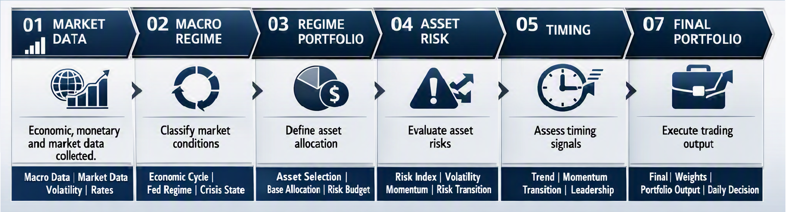

1 THE INVESTOR'S PROBLEM
Why do investors keep buying high and selling low?
The problem is not a lack of information. Investors have more market information than ever before. The problem is the lack of a consistent investment system for turning that information into decisions.
Without a defined process, decisions tend to become reactive. Rising prices create confidence and encourage buying. Falling prices create fear and encourage selling. The result is often the opposite of what long-term investing requires.
2 REASON:THE MISSING SYSTEM
Information alone does not create discipline.
Investors can have access to economic data, market prices, financial news and countless indicators, yet still make inconsistent decisions.
The missing element is a system that defines how information should be interpreted, when decisions should change, and how those decisions should translate into portfolio exposure.
3 WHAT IS THE INVESTMENT SYSTEM
A systematic investment process must establish four things.
4 GCRE'S PURPOSE
GCRE provides self-directed investors with a free, end-to-end investment decision system that spans from macro to micro — delivering both the complete process information and real performance results so users can clearly understand every step of the decision-making process.
The system works as follows:
First, it assesses the current macroeconomic environment to determine which asset classes should be held.
Next, it uses micro-level market data to recommend the appropriate allocation weights for those assets.
Finally, it evaluates individual assets based on risk and leverage scores to construct the final portfolio.
Throughout the entire process, the system continuously monitors for early-warning signals similar to those seen in the 2008 financial crisis. Performance targets of the GCRE investment decision system:
• Maximum drawdown below 15%
• Annualized return above 18%
By following this disciplined framework, self-directed investors can reduce emotional panic, avoid selling at market bottoms, refrain from buying at peaks, hold the right assets across different economic environments, and steadily achieve consistent positive returns.
5 GCRE'S METHODOLOGY
From changing market conditions to investment decisions.
The methodology follows a sequential decision process. Changing market conditions are evaluated first, followed by regime identification, asset risk assessment, timing and portfolio allocation.
01 Macro Conditions
Economic and financial conditions are evaluated to establish the broader market environment.
02 Regime and Asset Selection
Macro conditions are translated into a defined market regime that provides the context for portfolio decisions.
03 Asset Risk
Risk is evaluated at the asset level to determine how current market conditions affect individual assets and their appropriate exposure.
04 Timing
Market behavior and risk transitions are evaluated to determine whether portfolio exposure should increase, decrease or remain unchanged.
05 Allocation
The resulting signals are translated into portfolio weights through allocation rules, position limits and risk constraints.
Information is not treated as an investment decision by itself. Each stage transforms the output of the previous stage into a more actionable decision.
6 ARCHITECTURE
From data to portfolio decisions.
GCRE separates market analysis, risk assessment, timing and portfolio construction into distinct decision layers. Each layer produces an explicit output for the next stage.

CRISIS OVERRIDE
Crisis conditions have priority over the normal decision sequence. When a defined crisis state is active, the crisis allocation can impose a hard portfolio constraint rather than relying on normal timing adjustments.
SYSTEM PRINCIPLE
No single indicator determines the portfolio. Decisions are produced through a sequence of independent analytical layers, with each layer contributing a defined decision to the final portfolio.
7 PERFORMANCE
Measured by the decisions the system makes.
Performance is evaluated from the portfolio produced by the system over the measured period. The results below are generated from the same portfolio and decision process used by GCRE.
8 TRANSPARENCY
Every decision should be traceable.
GCRE is designed to make the investment process inspectable — from market conditions and regime classification to risk, timing, allocation and portfolio decisions.
Decisions
The system records the conditions and rules that determine changes in portfolio exposure.
Methodology
Macro regimes, asset risk, timing and allocation follow defined systematic rules rather than discretionary market calls.
Portfolio
Portfolio weights and allocation changes are derived from the system's decision process and can be examined against the underlying signals.
Performance
Historical performance is presented together with its measurement period so that results can be evaluated in their proper context.